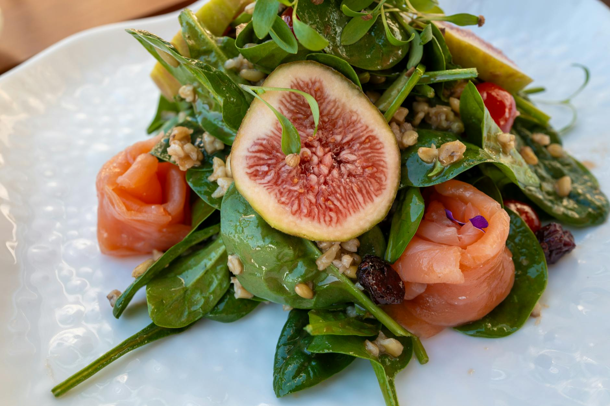

Can You Build Muscle Without Gym Equipment?
Key takeaways
- Thinking you need a fancy gym and heavy weights to build muscle?
- Think again!
- Focus on: Building Muscle at Home: It's Possible!.

Building Muscle at Home: It's Possible!
Thinking you need a fancy gym and heavy weights to build muscle? Think again! You can achieve significant strength gains and sculpt your physique right in your own home, using just your bodyweight and a few common household items. This guide focuses on effective, no-equipment movement plans to help you get stronger.
The Power of Bodyweight Training
Bodyweight exercises are incredibly versatile and accessible. They leverage your own weight as resistance, forcing your muscles to work harder. This type of training is fantastic for building functional strength, improving coordination, and increasing endurance.
Key Principles for Muscle Growth
Regardless of where you train, the principles for muscle growth remain the same:
- Progressive Overload: Gradually increase the challenge to your muscles over time. This could mean doing more repetitions, more sets, or making exercises more difficult.
- Consistency: Stick to a regular workout schedule. Aim for 3-4 strength training sessions per week.
- Nutrition: Fuel your body with adequate protein and a balanced diet.
- Rest: Allow your muscles time to recover and rebuild.
No-Equipment Workout Plan Examples
Here are some effective exercises you can do anywhere:
Lower Body
- Squats: A fundamental exercise for legs and glutes. Ensure your chest is up and back is straight.
- Lunges: Great for individual leg strength and balance. Alternate legs.
- Glute Bridges: Targets your glutes and hamstrings. Lift your hips off the floor.
Upper Body
- Push-ups: A classic for chest, shoulders, and triceps. If standard push-ups are too hard, start on your knees. For more challenge, try decline push-ups (feet elevated).
- Plank: Excellent for core strength. Hold your body in a straight line from head to heels.
- Triceps Dips: Use a sturdy chair or edge of a table. Lower your body by bending your elbows.
Full Body & Core
- Jumping Jacks: A good warm-up and cardio burst.
- Burpees: A challenging full-body exercise that combines a squat, push-up, and jump.
- Mountain Climbers: Works your core and cardio.
Putting It Together: A Sample Week
Here’s how you might structure your week. Remember to listen to your body and adjust as needed.
Day 1: Lower Body Focus
- Squats: 3 sets of 10-15 reps
- Lunges: 3 sets of 10-12 reps per leg
- Glute Bridges: 3 sets of 15-20 reps
Day 2: Upper Body & Core Focus
- Push-ups: 3 sets to near failure
- Plank: 3 sets, hold for 30-60 seconds
- Triceps Dips: 3 sets of 10-15 reps
Day 3: Rest or Active Recovery
Light activity like walking or stretching can be beneficial. You can also explore other home workout routines here.
Day 4: Full Body Circuit
Perform each exercise back-to-back with minimal rest, then rest for 1-2 minutes and repeat for 3 rounds:
- Jumping Jacks: 30 seconds
- Squats: 10 reps
- Push-ups: 8 reps
- Mountain Climbers: 30 seconds
- Lunges: 8 reps per leg
This circuit provides a great cardiovascular challenge along with strength building. For more circuit ideas, check out this.
Real-Life Example: Sarah's Home Transformation
Sarah, a busy mom of two, wanted to get stronger but found it hard to get to the gym. She started incorporating bodyweight exercises into her routine for 30 minutes, 4 times a week. She focused on increasing her push-up count and holding her plank longer. Within two months, she noticed a significant difference in her strength and energy levels, all without stepping foot in a gym. She credits her success to consistent effort and progressively making her workouts harder, like trying different push-up variations.
Common Mistakes to Avoid
- Poor Form: Always prioritize correct form over the number of reps to prevent injury and maximize effectiveness. Watch videos and practice in front of a mirror.
- Not Progressing: Doing the same routine with the same reps forever won't lead to muscle growth. Find ways to make it harder.
- Skipping Rest Days: Muscles grow during rest. Overtraining can hinder progress and lead to burnout.
- Neglecting Nutrition: You can't out-train a bad diet. Ensure you're getting enough protein. You can find great protein-rich meal ideas here.
Actionable Checklist for Your Home Workout
Ready to start? Use this checklist:
- [ ] Schedule your workouts for the week.
- [ ] Identify a quiet space in your home.
- [ ] Gather any optional items (water bottle, towel, sturdy chair).
- [ ] Choose 3-5 exercises for your first session.
- [ ] Focus on performing each rep with good form.
- [ ] Plan how you will progressively overload (e.g., add 1 rep next week).
- [ ] Remember to hydrate and fuel your body properly. Learn more about healthy eating here.
Educational only — not medical advice.
Frequently Asked Questions
Can I really build significant muscle with just bodyweight exercises?
Yes, absolutely. While progressive overload is key, bodyweight exercises can provide sufficient stimulus for muscle growth, especially for beginners and intermediates, when performed consistently and with proper intensity.
How often should I work out at home?
For muscle building, aim for 3-4 strength training sessions per week, allowing at least one rest day between working the same muscle groups.
What if I can't do a full push-up yet?
Start with knee push-ups or incline push-ups against a wall or sturdy surface. Focus on mastering the form before progressing to standard push-ups.
How do I know if I'm making progress?
Track your reps, sets, and how difficult exercises feel. You can also notice improvements in how your clothes fit, your energy levels, and your ability to perform daily tasks more easily.
Do I need any special equipment at all?
No, not for the core exercises. However, a yoga mat can add comfort, and a sturdy chair or step can be used for exercises like dips or elevated push-ups.
Keep Moving, Keep Growing
Building muscle at home without equipment is an achievable goal. By focusing on effective bodyweight movements, consistent effort, and smart progression, you can transform your body and boost your fitness. Start today and see what you can accomplish!
Related posts

What Foods Can Lower Your Body's Inflammation?
Discover everyday foods that can help reduce inflammation in your body. Learn practical tips for incorporating anti-inflammatory ingredients
Read more →
Busy Weeknights? Easy Recipes for Fast Meals
Discover quick and healthy recipes perfect for busy weeknights. Learn how to prepare delicious meals in under 30 minutes to save time and ea
Read more →What Daily Habits Boost Longevity?
Discover evidence-aligned daily routines that can help you live a longer, healthier life. Learn practical tips for better sleep, stress mana
Read more →